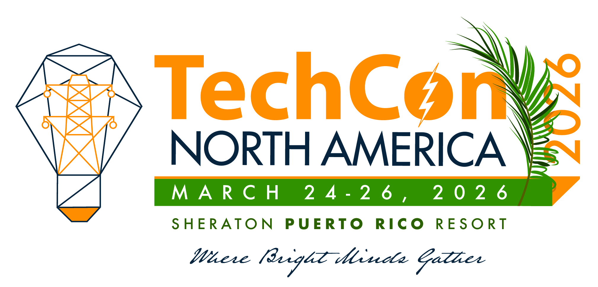
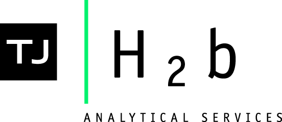

The Origins and Evolution of TechCon
TechCon began in 2010 as a small gathering of technology enthusiasts eager to share ideas and innovations. The inaugural event, held in a local community center, attracted just over 100 participants but set the stage for what would become a premier technology conference.

Over the years, TechCon has grown exponentially, welcoming industry leaders, startups, and students from around the world. By 2015, the conference expanded to include hands-on workshops, keynote speeches from renowned technologists, and interactive exhibitions.
Today, TechCon stands as a hub for innovation, collaboration, and inspiration. Each year, it continues to evolve, embracing new technologies and fostering a vibrant community dedicated to shaping the future.
Our Goals & Principles
TechCon is dedicated to fostering innovation, collaboration, and lifelong learning in the technology community. Our primary goals are to:
- Inspire attendees to push the boundaries of technology.
- Facilitate meaningful networking and partnerships.
- Promote diversity, inclusion, and accessibility in tech.
- Encourage the sharing of knowledge and best practices.
We believe in the power of curiosity, creativity, and community to drive progress. Every session, workshop, and keynote is designed to empower participants to make a positive impact in the world through technology.

Meet the Team
TechCon is organized by a passionate team of professionals dedicated to creating an exceptional experience for all attendees. Our team includes:
- Jane Doe - Conference Director: With over 10 years of experience in event management, Jane leads the overall planning and execution of TechCon.
 John Smith - Program Manager: John curates the conference schedule, ensuring a diverse range of topics and speakers.
John Smith - Program Manager: John curates the conference schedule, ensuring a diverse range of topics and speakers. Alice Johnson - Marketing Coordinator: Alice handles all promotional activities, social media, and community engagement.
Alice Johnson - Marketing Coordinator: Alice handles all promotional activities, social media, and community engagement. Bob Lee - Technical Support: Bob ensures that all technical aspects run smoothly during the event.
Bob Lee - Technical Support: Bob ensures that all technical aspects run smoothly during the event.
Together, we are committed to making TechCon a memorable and impactful experience for everyone involved.